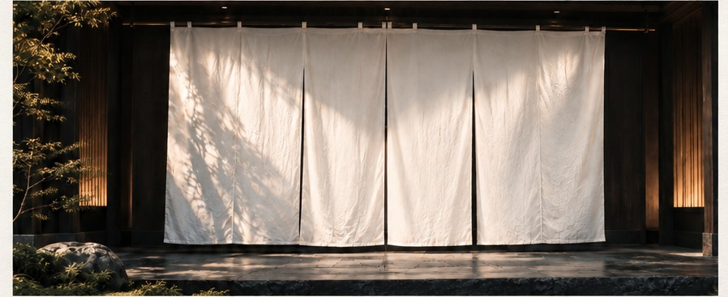
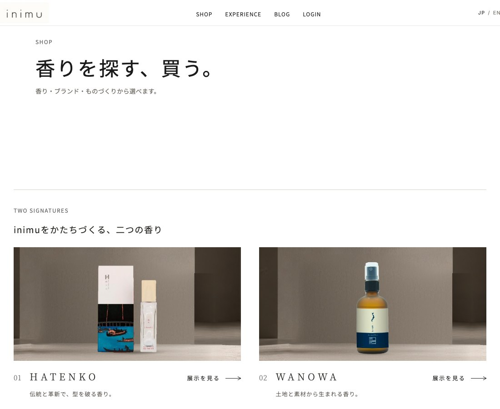
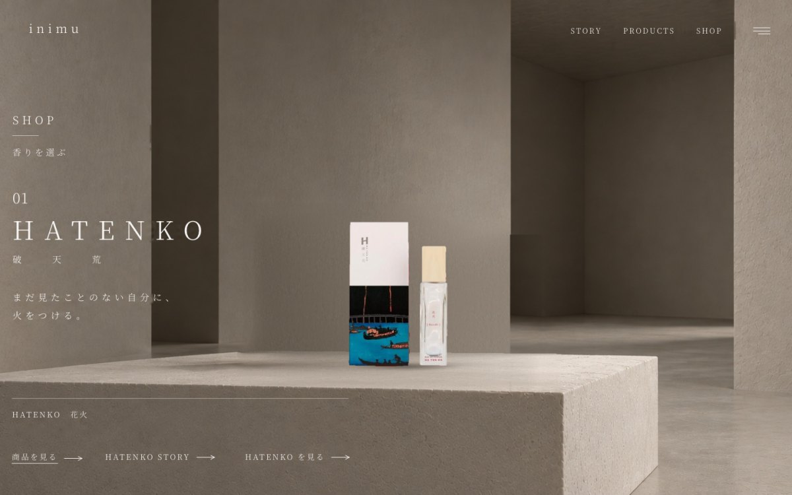
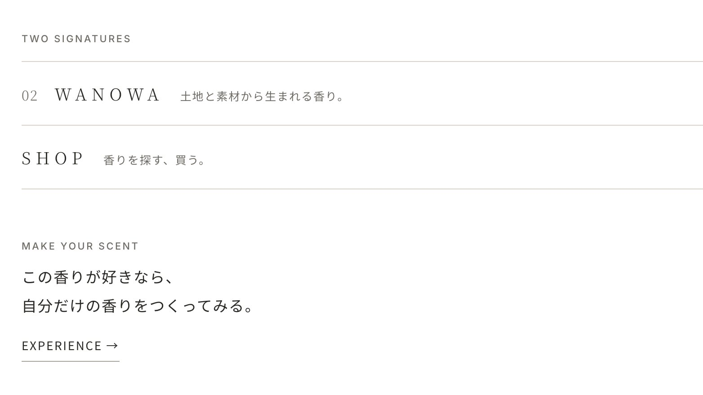

TOP
TOP→SHOP / EXPERIENCE
制作途中に検討した案。最初に2つのドアから目的を選ばせる。
STUDENT PROJECT / 01
inimu
Web Experience Redesign
CASE STUDY 企画提案書と公開サイトをもとにした、非公式の改善提案

PROJECT
浅草のフレグランス体験ブランド inimu のWeb体験再設計。
記載内容は、既存の企画提案書・公開サイト・リポジトリ内資料で確認できた範囲に限定しています。
商品・体験・素材・地域・職人など、伝える価値が複数あった。提案書では、SHOPとEXPERIENCEの間に、もう一方へ進む入口が少ないと整理されている。
「見せる順番がずれている」は、ここから導いた分析上の評価であり、観察事実そのものではない。
図と地は、見る対象と背景の関係を捉える知覚心理学の考え方。SHOPを目的に訪れた人にはSHOPが図となり、EXPERIENCEは地になりやすい可能性がある。
逆の場合も同じ。そこで、目的を達成した後にもう一方の価値へ気づける、控えめな導線を考えた。
これは図と地の概念をUXへ応用した仮説であり、購買やページ遷移の変化を証明するものではない。
旧サイトの確認内容と、そこからの分析・仮説を分けて記載しています。実物の旧サイト画面や当時のワイヤーフレームは再現していません。
2ドア案を廃止した理由は、クリック導線の改善だけではない。情報や目的を選ぶ前に強い第一印象をつくり、訪問者をinimuの世界へ引き込むために、イントロダクションを先に置いた。
制作途中に検討した案。最初に2つのドアから目的を選ばせる。
世界観を体験した後に、目的に応じて分岐する。公開サイトで実装済み。
HYPOTHESIS イントロダクションによる没入感の向上や、その後の行動変化は未検証。
ブランド体験の演出と、相互回遊の設計を分けて考える。
イントロダクションは、inimuの世界へ引き込むための演出。SHOP / EXPERIENCEの導線は、目的を果たしたあとに別の価値へ気づけるようにするためのUX設計。
相互発見・新しい回遊
SKIP INTRO イントロダクションはスキップ可能。目的が明確な訪問者は、すぐにSHOP / EXPERIENCEへ進める。
映像・情景・テキストで、最初の接点をブランド体験として演出する。
SHOPからEXPERIENCE、EXPERIENCEからSHOPへ、次の発見を静かな一行で示す。
思想を、画面の位置と静かな一行で実装する。





掲載画像は画面キャプチャと制作中のScene 04素材です。実際の操作体験は公開サイトで確認できます。
イントロダクション、SHOP / EXPERIENCEの分岐、展示・STORY・公式ストアへのリンク、相互回遊の導線を提案サイトに実装。
没入感、相互回遊率、SHOPとEXPERIENCEの両方に触れた割合、予約数・売上などは未計測。
成果はまだ測っていない。だから、確かめる方法を先に決めておく。